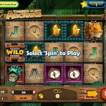
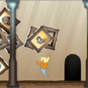
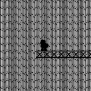
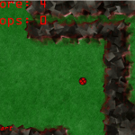

5 great games from a 48-hour local multiplayer game jam in Downtown
Brooklyn - 2015
A game I worked on for MultiJam Ultra was featured in Technical.ly Brooklyn among other fantastic projects
Selected Projects and Skills
Om Nom Blitz
Om Nom Blitz is quick 2-player, local multiplayer game I made for Ludum Dare
33

Crush II
Crush II is a quick game I made for mobile and desktop which started as a
deconstruction of the match
3 genre. In this case you're trying to match 2 blocks as they fall at increasing
speeds while trying
to maintain combos and shoot for a large multiplier

Kontroise
Kontroise is a prototype of a game I was looking to make. It's pretty
playable, and I do intend on
returning to it one day. However, the concept most likely will change, and the
text to speech concept
will be replaced with actual voice acting. This was initially made for a Ludum
Dare

Fantastic Dueling Hearts in Space 2: Robots Dueling Over a
Volcano
This game was originally made for a Global Game Jam. 2 to 4 players can
join in and play this fast-paced competitive game.
Freely change the color of the trails you leave behind and eat pellets to get
longer in an effort to get your opponents to hit a trail that is not of their
current color

Microsoft Jackpot
During my time at Arkadium, I was a game programmer on this project from
the start. We developed this
for Windows 8, and it was available for free on Windows 8, 8.1, and 10. I didn't
work on any of the
monetization portions however, but my hand was involved in every other portion
of the game, and I personally
added a lot of tweaking for game feel on the Jungle and Ocean theme bonus game
sequences.
Unfortunately, Microsoft has delisted this project and is no longer officially
available for download
Fantastic Dueling Hearts in Space
Fantastic Dueling Hearts in Space was made for the Global Game Jam 2013 in
collaboration with Yudou
Zhao. It’s a game about indirect combat. Each player must hit each other with
the environmental obstacles
by pushing them via a pumping mechanism activated by holding a button and
releasing. We were voted
2nd place in best game design for the NYU Game Center location
Springer
I worked on this game with Dennis Liaw for a ludum dare. We thought of an
idea that was effectively
"what if your character can only jump and nothing else?" As always we did all
the art, music, and audio
from scratch. This was one of the games I used propellerhead Figure to write the
music for. Unfortunately
due to changes in modern web browsers the current build won't let you pass a
certain point in some
browsers

Airdrop Museum
Air Drop Museum was a game made for the Quantum Box logo game. Quantum Box
logo games are super simple,
web based games that are generally made in 2-4 hours. This one is about a cat
who is stuck curating
a museum forever
Prodigal Sun
This game was made for the 2012 Molyjam as in collaboration with other
local NYC devs. I primarily
handled programming and visual effects. We created this one using Flixel
A 2013 Lawn Odyssey
This was made for the 2013 Molyjam. The theme for this one was "There is an
acorn, and it is a golden
acorn. We’re taking acorns to the next level." I'll let you explore for yourself
Root
Selected for the “Most Beautiful” award at the NYU Game Center Jam site,
Root was designed for the
2011 Global Game Jam. Collect nutrients, water and energy as you guide a new
species of plant through
the treacherous earth. Mixed-media artwork combines digital techniques with
pastels, watercolor and
charcoal. Dynamic sound allows the player’s gameplay to contribute to the
auditory experience. Avoid
predators and obstacles, and reach the surface before you’re doomed to
extinction

Waffle
Waffle was a collaboration between Bob Clark and myself for the Global Game
Jam 2010. It is a platformer
where managing conversations is how you progress through the game
Caution! Falling Coconuts!
This game was made in 4 hours during a small Game Jam I organized with a
few friends of mine. Our
idea evolved into a two player game in which one player tries to drop coconuts
on the other. This player
has 50 coconuts at their disposal to try to land 5 of them on the other player’s
head. The player on
the ground has camera focus, so they can use that to their advantage to make it
more difficult for the
player trying to drop coconuts
Kitty Crusade
Kitty Crusade was a game I made for the Ludumdare 22 in about 12 hours. The
theme was "alone". It’s
a game about wandering into a forbidden area only to find out that it was not
the best of ideas for
reasons you didn't expect
Super Data Entry Extreme!
This game was made for the GDC 2012 pirate kart. It was an art game
exploration of Corporate America,
and what is often seen as necessary to make your way to the top
Bubble Bubble
This game was made as a digital demonstration of a game designed by Jesse
Fuchs. It is about stock
trading, and riding the bubble for as long as possible until it bursts. It was
drafted for the Babycastles
Credit Due Exhibit curated by Jesse Fuchs at the Showpaper 42nd St Gallery
beginning on January 6th,
2011. Unfortunately I don’t have the source or the executable anymore, but it
really was a gallery
show specific piece and I wouldn't have distributed it outside special
exhibitions in any event

Size Matters
This was a game I made as a final project for a Flash class. It was loosely
inspired by Katamari Damacy.
It was envisioned to eventually be sort of a puzzle game, where managing your
size affected how you
could progress and such. I'm considering revisiting this and building it into
something more respectable
Languages
HTML
CSS
PHP
SQL
Javascript
C#
Java
C++
C
Bash
GoLang
Rust
PERL
Frameworks/Runtimes
Laravel
CodeIgniter
JQuery
.NET
Node.js
SFML
Unity3d
Godot 4
Construct 2/3
Clickteam
Bulma
Bootstrap
Express
CMS
Wordpress
ExpressionEngine
CraftCMS
Ghost
Joomla
Server
AWS
Apache
Nginx
MySQL
PostgreSQL
General Linux Administration
MongoDB